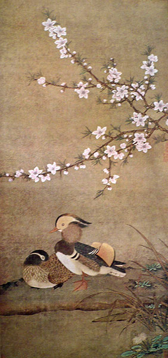

- Необъятные Небо и Земля, неисчислимое множество
- людей и других существ, прекрасные сочинения и
- богатейший язык — всё это составляет мир красок.
- Как можно относить колорит только к живописи!
- Ван Гай
- людей и других существ, прекрасные сочинения и
Однажды наш лучший и талантливейший поэт напутствовал читателей своих стихов: «Прочти и катай/ в Париж и Китай!»
Я бы поехала сначала в Китай. Первое представление об этой сказочной стране у меня сложилось в раннем детстве благодаря Г.Х. Андерсену, который сообщил: «В Китае все люди китайцы, и даже сам император — китаец». Это было так странно… но я глубоко поверила сказочнику.
К тому же я узнала, что искусство в этой стране достигло непревзойденной высоты: искусственный соловей пел там неотличимо от натурального.
Всё, что я узнала впоследствии, подтверждало моё убеждение: Китай — страна чудес. Нас, жителей средней климатической полосы Европы, страны степей и болот, лесов и озер, где небо не часто бывает ясным (30% дней в году), где краски природы не радуют (и не утомляют) яркостью и разнообразием — нас, говорю я — чарует природа Китая: высокие горы и могучие реки, цветущие деревья и пестрые птицы…
В коллективном представлении народа Поднебесной мир был полон цвета. Всё было окрашено в чистые хроматические цвета плюс черный и белый; они составляли систему, называемую «пять цветов»: зеленый (синий), красный, белый, черный, желтый.
- Зеленые: весна, дерево, Восток, планета Юпитер, дракон Цинлун.
- Красные: лето, огонь, Юг, планета Марс, птица Феникс.
- Белые: осень, металл, Запад, планета Венера, Тигр.
- Черные: зима, вода, Север, планета Меркурий,Черепаха и Змея (в объятии).
- Желтый: конец лета, земля, Центр, планета Сатурн.
- Красные: лето, огонь, Юг, планета Марс, птица Феникс.
Все эти цветовые обозначения даны по аналогии с красками природы и достаточно понятны — за исключением условных обозначений стран света; в индийской космологии, например, страны света маркируются иначе. А мы с вами назвали бы восток белым, юг желтым, запад красным, а север черным. Разве не так?
Впрочем, и облака в Старом Китае могут принимать окраску во все канонические цвета, кроме синего.
Волшебник Дунфан Шо, дух звезды Суйсин, рассказывает государю У-ди: «Когда я бродил в небесах, то к востоку от Чаньани, на расстоянии семидесяти тысяч ли от чудесной горы Фусан, лежит Облачная гора. На её вершине есть колодец, через который облака выходят в небеса. Когда должно свершиться благодеяние под знаком земли, облака желты, под знаком огня — красны, под знаком металла — белы, под знаком воды — черны.
Государь глубоко поверил Шо». (3, стр. 45)
Не трудно представить себе владения императора У-ди: там было «Подворье синего дракона» окруженное «Красной стеной»; там росло «Звучащее дерево», на котором гнездились Пурпурная ласточка и Желтый аист, а вокруг росла Золотая трава минцзинцао.
Волшебник Дунфан Шо, гость У-ди, побывал на море Пурпурных глин и в Столице Мрака, пил отвар каштанов с горы Алой зари и желтые росы с Темных небес. Повстречал синего тигра и ехал на нем верхом, превратил синюю тряпку в дракона. Побывал на Озере туманов и на берегу Белого моря.
Повстречал Желтобрового старца, у которого зрачки глаз сияли синим огнем, поэтому он видел вещи, спрятанные в тайниках.
Вот поистине многоцветная жизнь!
Русскому читателю давно знакома древняя Китайская Книга Перемен — И-цзин. В этой книге наглядно представлены 64 варианта взаимодействия космических сил Инь и Ян, обозначенных соответственно прерванной (желтой) и сплошной (синей) чертой. Таблица всех 64-х гексаграмм, исполненная в цвете, похожа на шкалу смешений цветов от синего до желтого через все возможные варианты отношений этих цветов. Получается своего рода картина стиля оп-арт, выполненная в технике пуантилизма.
Обратите внимание на гексаграмму №32 — Хэн. Постоянство. Желтые и синие черты взаимно уравновешены и составляют в смешении (слагательном) белый цвет. Значение этой гексаграммы выражено в тексте:
- Постоянство. Свершение. Благоприятна стойкость. Хулы не будет.
- Благоприятно уметь куда выступить. (17, с. 249-250)
Афоризмы этой гексаграммы оптимистичны, как и её белый цвет.
Белый — это сам Свет, источник жизни, символ чистоты, святости, знания, мира и покоя — не только в Китае, но и на всей земле.
Белый — это единство всех цветов солнечного спектра, это бог среди красок. В нем воплощается идея единства противоположностей — основной закон бытия. В буддизме белый — цвет нирваны — желанной цели жизни святого. В Старом Китае богиня Гуаньин одета в белый хитон, а народ (без различия сословий) любуется белым снегом, цветами лотоса и вишни, облаками и снежными вершинами гор.
Белый цвет способен внушить человеку стремление к чему-то неизведанному, тягу к пространству, в область Духа…
Некто Цзы-ю из рассказа Лю И-цина, увидев утром свежевыпавший снег, внезапно почувствовал неодолимое стремление уйти куда-то, и подальше. Он поехал к другу, но дойдя до его дома, остановился и пошел обратно, так как «чувство прошло». (3, стр. 54)
Этот эпизод очень напоминает стихотворение А. Блока «Зачатый в ночь, я в ночь рожден».
- …В ту ночь был белый ледоход,
- Разлив осенних вод.
- Я думал: — Вот река идет.
- И я пошел вперед.
- Разлив осенних вод.
С трудом удерживаюсь, чтобы не привести здесь всё чудесное стихотворение А. Блока о Белой Незнакомке, которая темной ночью, на мосту через покрытую льдами реку, дала поэту белую маску и поманила его в таинственную даль.
- Она зовет, Она манит.
- В снегах земля и твердь.
- Что мне поёт? Что мне звенит?
- Иная жизнь? Глухая смерть? (1907 г.)
- В снегах земля и твердь.
В этом стихотворении события происходят в черно-белом колорите: это сочетание цветов свойственно метафизической живописи и любимо поэтами интеллектуального образа мышления (символистами).
В китайской литературе, как и в природе, есть живой образ единства черного и белого — ласточка. Герой рассказа Лю фу «Ван се — мореход» попадает в страну ласточек — оборотней и волшебников. Все они одеты в черное, а на голове у царя корона в виде птицы. В этой стране Ван Се сам превращается в подобие ласточки: он совершает головокружительный полет — от нищего и голого полу-утопленника до знатного и богатого господина. Он познаёт счастье любви и горе разлуки, смерть сына и возврат его к жизни.
Вся его жизнь (как и наша с вами) — похожа на полет ласточки: вверх-вниз, счастье и слёзы, встречи и разлуки…и ещё что-то неуловимое и загадочное, что заставляет нас подолгу следить за полетом этих чудесных птиц, и что может выразить только поэт:
- Однажды мы под вечер оба
- Стояли на старом мосту.
- Скажи мне, спросил я, до гроба
- Запомнишь — вон ласточку ту?
- И ты отвечала: — Ещё бы!
- И как мы заплакали оба,
- Как вскрикнула жизнь на лету…
- До завтра, навеки, до гроба —
- Однажды,на старом мосту… (В. Набоков )
- Стояли на старом мосту.
Сочетание белого и черного символизирует сущность любого процесса и любой вещи: начало и конец, линия и пятно, день и ночь…
Но ведь это сильно упрощенная схема того, что происходит в действительности. На самом деле между крайними стадиями процесса имеются переходные. Между фиолетовым и красным человеческий глаз различает 120 цветов, а между белым и черным — около 100 промежуточных — более или менее серых.
Непреходящее обаяние китайской монохромной живописи — богатство оттенков белого, серого и черного, передающих множество оттенков чувства и мысли художника.
В литературе так же разнообразны переживания и настроения персонажей. В самых ранних произведениях народной поэзии (Шицзин) мы встречаем не только клишированные , «типовые» ситуации и изъявления чувств, но и тонкие нюансы, присущие истинно лирической поэзии.
- Убитая лань на опушке лесной,
- Осокою белой обвил ты её.
- У девушки думы на сердце весной —
- О юный счастливый, пленил ты её.
- В лесу низкорослый дубняк шелестит.
- Убитый олень на опушке лежит,
- Он белой осокою плотно обвит.
- А девичья прелесть, как яшма, блестит.
- «Потише, потише, не трогай меня,
- Коснуться платка не позволила я,
- Не трогай — залает собака моя». (4,стр. 35)
- Осокою белой обвил ты её.
В более поздней средневековой литературе для описания чувств широко используются цветовые образы в виде пейзажного фона или аксессуаров основного действия.

Любовь
Первое место в ряду человеческих чувств занимает любовь.
Это совсем не удивительно — ведь бог любви Эрот появился на свет первым из богов (если верить космогоническому мифу Гомера). Этот молодой бог был весь золотой и сиял, как солнце. Вместе со своей матерью титанессой Геей он создал весь земной мир; его воле не могли противиться даже боги, не говоря уж о людях.
Греческий философ Эмпедокл причислял любовь к главным космическим силам, поскольку она объединяла различные сущности, создавая между ними взаимную симпатию. Антиподом Любви была, по Эмпедоклу, Вражда — сила, разъединяющая единое.
Какого цвета любовь в Старом Китае? Если хотите узнать это — последуйте совету Кун-цзы — прочтите книгу «Шицзин». Это незаменимый источник знания о культуре Старого Китая, и более того — самой жизни во всей её реальности. Если вы скажете, что это «не современно», — я с вами не соглашусь. Разве людям нашего времени чужды чувство любви, увлечение красотой, стремление к семейному счастью, терзания ревности, тоска разлуки, обида от измены…Человеку всех времен суждено испытывать благословение и проклятие любви со всеми её перипетиями.
- О влюблённость! Ты строже судьбы!
- Повелительней древних законов отцов!
- Слаще звука военной трубы! (А. Блок)
- Повелительней древних законов отцов!
Существенное отличие старинной поэзии от средневековой и более поздней — наличие моральных канонов и системы табу. Любовь старинная — более «небесная», чистая, подчиненная законам общества, соблюдающая моральные нормы. Она совершается на фоне бело-розовых облаков, цветов персика, вишни и груши, молодых побегов бамбука.
- Вот одинокая груша растет.
- Влево она от пути.
- Милый ко мне, одинокой, домой
- Всё собирался прийти.
- Сердцем своим так люблю я его!
- Чем напою, накормлю я его? (4, стр. 100)
- Влево она от пути.
Пока любовь молода (и законно оформлена), она приносит радость.
Печали начнутся позже, а пока — пышный лес, пестрые фазаны, вино и музыка, счастье вдвоём:
- Лес на равнине так высится пышен и густ!
- Только фазаны сбираются день ото дня.
- В день надлежащий ты, славная дева, пришла,
- Редких достоинств полна, ты научишь меня.
- Пир учинив, веселюсь, восхваляя тебя,
- Буду любить тебя и — не устану, любя. (4, стр. 200)
- Только фазаны сбираются день ото дня.
Случайно ли, что подобных радостных песен в Шицзин сравнительно мало; гораздо больше таких, где поют о грусти и печали, о тоске и обиде: «Песнь забытой жены», «Глухая крапива», «Тоска по мужу», «Прочно окутан терновник плющом», «В ожидании мужа»…
Особенно пронзительна песня «Ты юношей простым пришел весной».
Это печальная история семейной жизни женщины. События разворачиваются на фоне природного пейзажа, меняющего колорит в зависимости от изменений чувств рассказчицы. Собственно говоря, это не песня, а роман в стихах — в шести десятистрочных строфах.
I строфа: Весна, светло-розовый колорит, платье из цветного шелка. Традиционное начало любви.
- Не пряжу ты менял на шелк цветной,
- Ты к нам пришел увидеться со мной.
Впрочем, уже до свадьбы начались неприятности: отложен срок свадьбы, жених сердится.
- Так не сердись же, милый, на меня —
- Срок будет осенью — не я виной.
II строфа: Сад обветшал, зелень подернулась пылью и желтизной.
- Когда тебя мой не встречает взгляд —
- Потоки слёз глаза мои струят.
III строфа: Созревают ягоды тута. Невесту мучает соблазн — поесть сладких ягод. Но нужно побеждать себя:
- Будь осторожна, девушка, и ты:
- Не принимай ты ласки от дружка!
IV строфа: Листья тутовника желтеют и падают на землю. Колорит становится коричневым.
- В твой дом ушла я — и три года там
- С тобой вкушала горечь нищеты!
И вот — жена брошена, осталась одна.
- Ты, господин, женою пренебрег —
- Менялся часто, лгал, как только мог.
V строфа: Женщина рассказывает о том, как тяжко работала в доме, не видя белого света — колорит совсем черный, с примесью фиолетового.
- Блюла я клятву — кто виновен в том,
- Что ты со мною стал жестоким сам?
- Себя жалею, волю дав слезам.
- Что ты со мною стал жестоким сам?
VI строфа: На черном фоне жизни мелькают изредка светлые блики воспоминаний:
- Быть верным клятву дал ты ясным днем!
- Ты обманул…Могла ли знать о том?
И заключительный вопль отчаяния:
- Что делать мне? Всему конец теперь.
Пожалуй, такой силы переживания не было даже у Блока:
- Мы встретились с тобою в храме
- И жили в радостном саду,
- Но вот зловонными дворами
- Пошли к проклятью и труду.
- Нет! Счастье — праздная забота,
- Ведь молодость давно прошла.
- Нам скоротает век работа,
- Мне — молоток, тебе — игла.
- Я близ тебя работать стану,
- Авось ты не припомнишь мне,
- Что я увидел дно стакана,
- Топя отчаянье в вине.
- И жили в радостном саду,
Любовь может принимать различные оттенки красного: огненный, пурпурный, кровавый, томатный, морковный, кумачёвый, заревой, румяный, кирпичный, медный, алый, гранатовый, малиновый, рябиновый, клюквенный, цвет черной розы, которую послал Поэт незнакомке в ресторане. Возможны также другие оттенки — столь же многочисленные, как характеры людей и их чувства. В литературе Старого Китая любовь маркируется красным (пурпурным), а также сочетанием красного с белым или зеленым. Если речь идет об отношениях с женщинами, имеющими независимое представление о морали (проще говоря, с гетерами) — то здесь кодовый цвет — зеленый.
Отношения свободной любви в изобилии описаны в сборнике новелл XII — XVII вв. «Рассказы у светильника».
Красавица Пинпин из рассказа Ли Чжэня, готовясь к свиданию, наряжается «в свободную, без единого шва, рубашку цвета пурпура, из-под которой кокетливо выглядывает изумрудно-зеленая узорчатая юбка». То, что произошло между нею и студентом в спальне, называлось «На ветках яблоньки-дичка развесить красные плоды» (5, стр. 347). Цель свидания была достигнута, влюблённые «испили радость густых туч и обильных дождей», а белый шелковый платок «обагрился киноварью».
Верный способ пригласить девушку на свидание, не тратя слов — послать ей букет белых и алых лотосов (5, стр. 353). Можно также подать весточку предмету своих мечтаний, пустив по воде красные листья.
Что такое брак? В «Рассказах у светильника» формула брака проста: это «два пиона на ложе из слоновой кости» (пионы, конечно, белый и красный).
Ревность
Любовь порождает страшного демона — ревность.
- Ибо крепка, как смерть, любовь;
- Люта, как преисподняя, ревность;
- Стрелы её — стрелы огненные;
- Она — пламень весьма сильный. (Песнь Песней 8:6)
- Люта, как преисподняя, ревность;
Рассказы о ревности не менее поразительны, чем о любви. Ревнивые жёны отравляют жизнь и себе, и мужьям, и соперницам, они способны на убийство и прочие злодейства.
Юй-Тун-Чжи рассказывает: «Дочь некоего У, правителя Ли Яна, что вышла замуж за Жуаня по прозвищу Сюань-цзы, была несносной ревнивицей. К примеру, она запрещала служанкам перевертывать чашки и накрывать крышками большие блюда, чтобы не возникла приязнь между супругом и прислужницами. Однажды Сюань восхитился красотою персикового дерева, росшего возле дома: цветы его были пышны, а листья блестящи. Супруга разгневалась и повелела служанкам срубить дерево мечами, а цветы оборвать!» (3, стр. 49)
Какого же цвета ревность? Наверное, цвета разинутого рта, изрыгающего упреки и проклятья; цвета глаз, покрасневших от слёз, цвета багровой физиономии ревнивца и крови, пролитой в отмщение поруганного чувства.
У тех же, кто умеет таить свою ревность от людей — кровоточит душа. По всему получается, что цвет ревности — кровавый.
Печаль, тоска
Другой персонаж из свиты, сопровождающей любовь — печаль, она же — грусть, переходящая в тоску. Любящим есть о чем грустить — о разлуке с предметом любви, о его измене, отсутствии взаимности, о несостоявшемся свидании, о несбывшейся надежде на соединение с любимым человеком.
Особенно изобилуют такими мотивами песни из книги Шицзин.
В них не всегда есть цветообозначения (прямые указания на «цветовой эквивалент» чувства), но всегда присутствует пейзаж, как фон драмы, а следовательно, возникает мыслимый и представляемый колорит героя песни.
- Женщина страдает от измены мужа:
- В тучах всё небо, нависшие тучи черны,
- Глухо рокочет, гремит нарастающий гром…
- Глаз не сомкнуть мне, я ночью заснуть не могу,
- Все мои помыслы, все мои думы — о нём! (4, стр. 40)
- В тучах всё небо, нависшие тучи черны,
Другая женщина, покинутая мужем ради общества наложниц, горько сетует:
- Точно нечистой одеждой, тоской облеклось
- Сердце моё, и печаль мою сбросить нет сил.
- Думы об этом в глубоком молчанье таю,
- Птицей бы я улетела, да не дано крыл! (5, стр. 38)
- Сердце моё, и печаль мою сбросить нет сил.
Серое и черное — вот колорит грусти, печали, тоски. А также тёмно-синее — цвет сумеречного неба, когда в комнате зажигают свечи.
- Ты в синий плащ печально завернулась,
- В сырую ночь ты из дому ушла… (А.Блок)
Л. Миронова,
20.02.2012